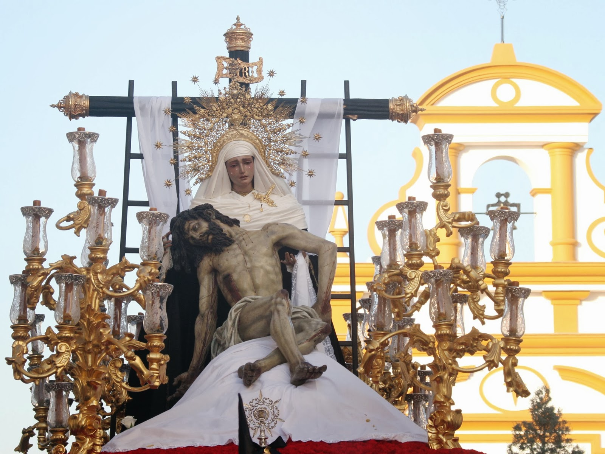

Amargura
Plaza de Nuestra Señora de la Amargura
Fervorosa E Ilustre Hermandad del Santísimo Sacramento y Cofradía de Nazarenos de Nuestro Padre Jesús Descendido de La Cruz, Nuestra Madre y Señora de La Amargura y Santa Ángela de La Cruz.

Numero de hermanos
1250
Nazarenos
450
Autores
Nuestro Padre Jesús Descendido de La Cruz es obra de Manuel Carmona Martín (1992). Nuestra Señora de la Amargura es obra de Manuel Pineda Caldrón (1952), restaurada por Cerero Sola (1982) y por Manuel Carmona (1987).
Capataces
Luis Alfonso Benítez Miguel Ángel Gómez y equipo.
Música
A.M. Nuestra Señora de la Estrella.
RECORRIDO
| Hora Aprox. | Cruz de guía |
|---|---|
| 18:00 | Salida |
| 19:00 | Divino Salvador |
| 19:30 | Cerro Blanco |
| 20:00 | Real Utrera |
| 20:30 | Real Utrera |
| 21:00 | Capilla Gran Poder |
| 21:30 | Carrera Oficial |
| 22:00 | San Sebastían |
| 23:00 | Ronda |
| 00:20 | Entrada |